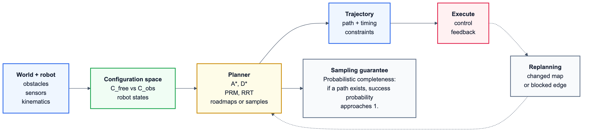

BE4M36UIR · AI specialization question 6
Robot decision making, planning, and coordination
UIR is where AI planning touches the floor. A robot is embodied, so every elegant graph search answer has to survive sensors, actuators, configuration space, collisions, replanning, and sometimes other robots trying to share the work.
Module 1
Robots, embodiment, and control paradigms
Start the oral answer by grounding the agent in the physical world. Sensors observe, actuators change the world, and the control architecture decides how much reasoning happens before action.
Committee priorityNormal focus
Good oral framing for robotics, but committee evidence points more strongly at planning algorithms than architecture taxonomy.
- Embodied-agent definition and sensor classes
- Hierarchical, reactive, and hybrid paradigms
- Planner/executive/reactive-layer tradeoffs
55-70 min
Watch first
04.02 Robot reactive control architectures - Rico Picone, PhD (17:05)
Fallback linkECE425 Hybrid Deliberative/Reactive Paradigm - Rose-Hulman Online (9:35)
Fallback linkSay this out loud
What you must be able to say
- A robot is an embodied agent: its body has geometry, dynamics, time, energy, uncertainty, and interaction constraints.
- Sensors measure internal or external state; actuators/effectors cause motion or physical interaction.
- Proprioceptive sensing is internal, such as encoders, IMU, battery, and joints; exteroceptive sensing observes the world, such as lidar, cameras, bumpers, GPS, and sonar.
- Hierarchical control is
Sense -> Plan -> Actwith an explicit model and long-horizon planning, but it reacts slowly and is brittle under model error. - Reactive control is
Sense -> Act, often behavior-based or subsumption-like; it is fast and robust locally, but weak at global guarantees. - Hybrid control uses a planner, executive/sequencer, and reactive behaviors so the robot can pursue goals while still handling fast safety events.
Remember: hierarchical thinks first, reactive acts fast, hybrid tries to keep both benefits.
Lab
Architecture selector
Use this when: classify an architecture by where planning happens before the actuator command.
Practice
Flashcards
Quick check
Free recall
Module 2
Path planning, motion planning, configuration space, and D*
This is the core planning bucket. Keep the ladder straight: workspace geometry becomes configuration-space obstacles, continuous planning becomes graph search or sampling, and changing maps call for incremental replanning.
Committee priorityHeavy focus
Planning in configuration space is the strongest UIR committee signal and matches reported robotics motion-planning questions.
- Path vs motion planning and C-space construction
- C_free, C_obst, roadmaps, grids, and A*
- D* Lite replanning with g/rhs consistency
85-110 min
Watch first
Robot Motion Planning: Road Map and Configuration Spaces - Algorithms Lab (17:44)
Fallback linkPath Planning with A* and RRT - MATLAB Autonomous Navigation (17:55)
Fallback linkGraph Search - Modern Robotics / Northwestern (9:26)
Fallback linkGrid Methods for Motion Planning - Modern Robotics / Northwestern (4:26)
Fallback linkAdvanced 1. Incremental Path Planning - MIT OCW (1:22:46, watch 34:00-54:00)
MIT OCW pageSay this out loud
What you must be able to say
- Path planning finds a collision-free geometric path; motion planning finds a feasible trajectory with kinematics, dynamics, and often timing.
- A configuration
qfully describes the robot pose or joint state.C_obsare colliding configurations andC_free = C \ C_obs. - The planning problem is a continuous path
tau:[0,1]->C_freefromq_starttoq_goal. - Roadmaps embed a graph in
C_free: visibility graph, Voronoi diagram, PRM, grid, or lattice. Then run graph search. - Grid/graph planning uses BFS, Dijkstra, A*, any-angle variants like Theta*, weighted A*, and speedups such as better heuristics, bidirectional search, hierarchy, jump point search, and incremental replanning.
- D* and D* Lite reuse previous shortest-path search when edge costs change. D* Lite tracks
g(s)and one-step lookaheadrhs(s); local consistency meansg(s)=rhs(s).
Remember: C-space turns robot shape into forbidden configurations; graph search then works on safe samples or cells.

Lab
D* Lite consistency preview
Why: D* Lite is useful because it repairs changed parts of the old search instead of restarting.
Practice
Flashcards
Quick check
Free recall
Module 3
Informative path planning, exploration, and multi-robot allocation
Unknown environments turn planning into an information problem. The robot is not only asking "how do I get there?", but "where should I go to learn the most useful thing next?"
Committee priorityNormal focus
Exploration is useful robotics vocabulary, but the committee/report evidence is less direct than C-space and sampling planners.
- Frontier-based exploration and information gain
- Utility/cost tradeoffs for unknown maps
- Multi-robot task allocation basics
70-90 min
Watch first
Mobile Robotics: Frontier Exploration - Rémy Guyonneau (1:01)
Fallback linkFrontierNet: Learning Visual Cues to Explore - ETH Zurich CVG (5:03)
Fallback linkICRA 2021 Terrain Aware Autonomous Exploration - VeRLab (12:00)
Fallback linkMutual Information, Clearly Explained - StatQuest (16:14)
Fallback linkDecentralized Multi-Robot Task Allocation - People and Robots Lab (4:53)
Fallback linkSay this out loud
What you must be able to say
- Exploration usually decomposes into mapping, frontier or information target generation, utility scoring, task allocation, path planning, execution, and replanning.
- A frontier is the boundary between known free space and unknown space in an occupancy grid.
- Frontier utility can be
information_gain - lambda * travel_cost; variants choose nearest frontier, largest gain, cost-utility score, or hierarchical frontiers. - Information-theoretic exploration uses entropy
H(X) = -sum p log pand mutual informationI(X;Z)=H(X)-H(X|Z). - Informative path planning maximizes expected information gain along a path minus travel cost, but exact evaluation is expensive, so approximations and sampling are common.
- Centralized MRTA can optimize globally but has communication/computation bottlenecks and a single point of failure; decentralized MRTA scales and is robust but may be suboptimal.
- Task allocation tools include greedy assignment, Hungarian assignment, auctions, consensus-based bundle algorithms, and distributed frontier selection.
Remember: frontier utility is a trade: learn more, but pay less travel cost.
Lab
Frontier utility chooser
Use this when: increasing lambda makes far frontiers less attractive even if they reveal more.
Practice
Flashcards
Quick check
Free recall
Module 4
Multi-goal planning, Dubins constraints, and routing with profits
Multi-goal robot planning is TSP wearing a robot body. Targets may be neighborhoods, edge costs may depend on heading or order, and the best route may skip low-profit measurements when battery is limited.
Committee prioritySolid focus
Routing variants are plausible committee material because they connect robotics constraints with classic optimization structures.
- TSP, GTSP, TSPN, and orienteering variants
- Dubins state, bounded curvature, and path families
- Routing with profits under travel budget
70-90 min
Watch first
Coding a Dubins Car Optimal Path Planner - Aaron Becker (8:05)
Fallback linkFinding Time-efficient Trajectories for Dubins Vehicle - AI Center FEE CTU (16:30)
Fallback linkDubins TSP with Neighborhoods in 3D - ICRA 2018 (3:00)
Fallback linkClose Enough Orienteering Problem - CTU Computational Robotics Lab (13:14)
Fallback linkSay this out loud
What you must be able to say
- Multi-goal planning asks a robot to visit several targets and is related to TSP, ATSP, GTSP, TSPN, Dubins TSP, orienteering, team orienteering, and prize-collecting TSP.
- Robotic costs can depend on obstacles, start/final depot, heading, motion constraints, sensing radius, budget, rewards, and multiple robots.
- Sequence-dependent TSP appears when travel cost from
itojdepends on previous heading, order, or local path constraints. - Dubins vehicle state is
(x,y,theta); it moves forward with bounded curvature. Shortest paths are combinations of circular arcs and straight segments such as LSL, RSR, LSR, RSL, RLR, and LRL. - With sensing radius, visiting a target can mean passing through a neighborhood, giving TSPN or Dubins TSPN.
- Routing with profits maximizes collected reward under travel budget, often skipping low-value targets.
- Solution families are decoupled methods, transformation to TSP/ATSP/GTSP after sampling headings/viewpoints, and integrated sampling-based searches.
Remember: ordinary TSP asks for order; robotic variants add headings, neighborhoods, constraints, and rewards.
Lab
Profit route preview
Why: a budget can make skipping a target better than visiting everything.
Practice
Flashcards
Quick check
Free recall
Module 5
Sampling-based motion planning: PRM, RRT, RRT*, guarantees
Sampling-based planners avoid building the whole free space. They ask a collision checker about many candidate configurations, then connect enough of them that a path appears with high probability.
Committee prioritySolid focus
PRM/RRT/RRT* are directly named in reported motion-planning evidence and pair naturally with C-space questions.
- PRM as reusable roadmap vs RRT as single-query tree
- RRT* rewiring and cost improvement
- Probabilistic completeness vs asymptotic optimality
70-90 min
Watch first
PRM Sampling Methods - Modern Robotics / Northwestern (3:12)
Fallback linkRRT Sampling Methods - Modern Robotics / Northwestern (7:14)
Fallback linkFast comparison: RRT, RRT*, PRM - MIT 6.881 Final Project (5:41)
Fallback linkUC Berkeley CS287 Motion Planning: PRM, RRT, Trajopt (1:23:51, optional 9:00-29:00)
Fallback linkSay this out loud
What you must be able to say
- Sampling-based planning is useful because exact continuous high-dimensional motion planning is hard; it samples configurations and uses collision checking.
- PRM is a multi-query roadmap: sample free configurations, connect nearby samples with a local planner, store the graph, then answer many start/goal queries by graph search.
- RRT is a single-query tree: sample
q_rand, find nearestq_near, extend toward the sample, add a collision-free node, and stop when the goal is reached. - RRT explores quickly because random samples tend to pull the tree into large unexplored Voronoi regions.
- RRT* adds best-parent choice and rewiring so nearby nodes get cheaper paths through the new sample when possible.
- Probabilistic completeness means the probability of finding a path approaches 1 as samples go to infinity, if a feasible path exists.
- Asymptotic optimality means solution cost converges to optimal cost; RRT is generally not asymptotically optimal, while RRT* and PRM* are under assumptions.
Remember: completeness is about eventually finding a path; optimality is about eventually improving its cost.
Lab
RRT growth preview
Why: each random sample pulls the nearest tree node toward unexplored free space.
Practice
Flashcards
Quick check
Free recall
Previous exam reports
Reported-question drills
These are reconstructed from student reports. Try the answer first, then reveal the model answer if needed.
Clearly relevant
Configuration-space motion planning
Committee priorityHeavy focus
This drill mirrors the strongest reported UIR robotics-planning evidence.
- Configuration space, C_free, and C_obst
- Discretization, roadmaps, PRM, and RRT
- Completeness and optimality guarantees
Context: OI Mgr - Artificial Intelligence report: motion planning in robotics, configuration space, C_free/C_obst, discretization, PRM/RRT, probabilistic completeness, and asymptotic optimality.
Show model answer
- A configuration
qfully specifies the robot pose or joint state; the configuration spaceCis the set of all configurations. C_obstcontains configurations where the robot collides with obstacles or violates constraints;C_free = C \ C_obst.- The task is to find a continuous path from
q_starttoq_goallying inC_free; motion planning may also require kinematic, dynamic, or time feasibility. - Discretization builds a graph approximation of
C_free, but grid search is only one option; roadmaps and sampling-based planners use collision checking plus a local planner. - PRM samples free configurations and connects nearby ones for reusable multi-query roadmaps; RRT grows a single-query tree toward random samples.
- Probabilistic completeness means the chance of finding a feasible path tends to 1 with enough samples. Asymptotic optimality means solution cost converges to the optimum.
- Basic RRT is usually probabilistically complete but not asymptotically optimal because it adds first feasible extensions without systematic rewiring/cost improvement; RRT* and PRM* add mechanisms that improve cost under assumptions.
Lower confidence
A* in robot navigation graphs
Committee prioritySolid focus
Lower-confidence report, but A* on robot graphs is still a high-value planning bridge to C-space/roadmap answers.
- Open queue, g/h/f scores, and relaxation
- Admissible and consistent heuristics
- Graph optimality vs continuous robot feasibility
Context: Bachelor AI/ZUI report overlapping PUI/UIR: A*, heuristic functions, shortest-path heuristic for road networks, priority queue, already-seen states, and generated states.
Show model answer
- First define the search graph: nodes are collision-free configurations, roadmap vertices, grid cells, or road-network intersections; edges have nonnegative traversal cost and must be robot-feasible enough for the chosen abstraction.
- A* stores open states in a priority queue ordered by
f(n)=g(n)+h(n), wheregis known start-to-node cost andhestimates remaining cost. - When expanding a node, generate successors, compute tentative
g', relax the state ifg'improves the best known cost, update parent pointers, and push or decrease-key in the priority queue. - Use a closed/best-cost table so already-seen states are ignored only when the new path is not better; with inconsistent heuristics, allow reopening improved states.
- An admissible heuristic never overestimates the true remaining graph cost; a consistent heuristic also satisfies the triangle inequality and gives optimal graph paths without reopening.
- For road or robot navigation, Euclidean distance, straight-line time lower bounds, or Dubins/Reeds-Shepp lower bounds can be admissible if they do not exceed real travel cost.
- The guarantee is optimality on the discretized graph, not automatically a dynamically feasible continuous trajectory unless the graph edges/local planner encode that feasibility.
45-minute panic pass
Say these in order
- Robot body: robot equals embodied agent; sensors, actuators, controller; proprioceptive vs exteroceptive sensing.
- Architectures: hierarchical
Sense -> Plan -> Act, reactiveSense -> Act, hybrid planner/executive/reactive layer, with advantages and drawbacks. - C-space: define
q,C,C_obs,C_free, path vs motion planning, roadmap construction, grid/graph search, A* speedups. - D* Lite: changing edge costs, reuse previous search,
g,rhs, local consistency, repair not restart. - Exploration: frontiers in occupancy grids, utility as information gain minus travel cost, entropy/mutual information, centralized vs decentralized MRTA.
- Multi-goal: TSP variants, sequence-dependent costs, Dubins bounded-curvature paths, TSPN/DTSPN, orienteering and profits, decoupled/transformation/sampling methods.
- Sampling: PRM multi-query, RRT single-query, RRT* rewiring, probabilistic completeness, asymptotic optimality.
Oral exam skeleton
A clean 8-minute answer
1. Frame the domain. "UIR studies decision making, planning, and coordination for one or more embodied robots. Embodiment makes geometry, dynamics, sensors, actuators, uncertainty, and time central."
2. Architectures. "Hierarchical control builds a model and plans before acting; reactive control maps perception directly to behavior; hybrid control combines a deliberative planner, executive, and reactive safety layer."
3. Motion planning. "A configuration describes the robot state. Obstacles become forbidden regions in configuration space, so planning asks for a continuous path in free space, often approximated by roadmaps, grids, or sampling."
4. Graph search and replanning. "On a graph I can use BFS, Dijkstra, A*, weighted or any-angle variants and speedups. In changing or partially known environments D* Lite repairs previous A*-like search using g and rhs values."
5. Exploration and coordination. "Unknown environments use frontiers or information gain. Multi-robot exploration adds task allocation: centralized assignment is globally coordinated but fragile; decentralized auctions or consensus scale better."
6. Multi-goal data collection. "Multiple targets create robotic TSP variants. With headings and curvature constraints we get Dubins routes; with sensing radius we get neighborhoods; with limited budget and rewards we get orienteering or prize-collecting problems."
7. Sampling planners. "PRM builds a reusable roadmap; RRT grows a single-query tree; RRT* rewires for improving cost. PRM/RRT are probabilistically complete, while RRT*/PRM* are asymptotically optimal under assumptions."